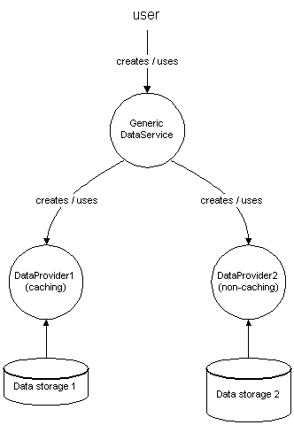
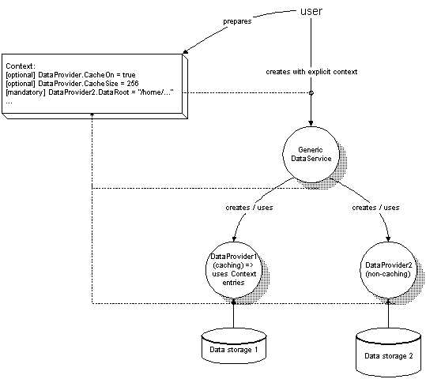
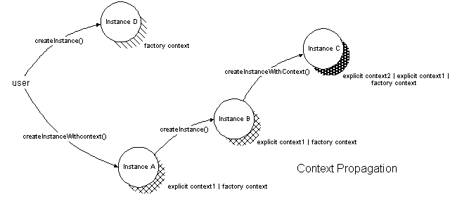

UNO Contexts |
|
Contents
Extensions to the XML Component Description
Migration path for existing OneInstance services
Abstract
This draft is about UNO contexts; what they are, how and under what condition they make sense, and when you should use them. UNO contexts are generic containers for storing arbitrary values that are either used by components to get their deployment settings or control the runtime behavior of a component.
Contexts are classified into static (component) contexts and dynamic (current) contexts. A component context provides a component's deployment values; a current context provides task-local values, such as values that are transferred implicitly via a chain of calls excluding other tasks having access to these values.
The following section, Introduction, introduces the topic with an example. The next two sections (Component Context and Current Context) present a definition and API proposal for the component and current context as well as a migration path for the current API.
Finally, the last section proposes Extensions to the XML Component Description, component description by describing deployment properties of a component implementation and invariants.
Introduction
A component implements a service (defined in UNO-IDL), that is, at least the defined set of supported interfaces of the service. The service builds up the contract between component implementor and component user which is the way a component can be accessed and used. In general, interfaces abstract from system and implementation details to allow that a component implementation may be exchanged for another. Therefore, component users should generally not rely on a actually running component implementation. This is a desired feature of components: handle them as isolated as possible. Changing an interface or in general changing the way a component's functionality is accessed is difficult, because client code has to be revisited even for minor changes. This is not always possible, if, for example, software has been developed by 3rd party engineers.
 For further explanations, consider the following example: A DataService is providing data in a generic way, abstracting from the specific sources from which it gets the data. This approach is often chosen in software systems, because it is a flexible way of extending to unknown data sources, thus avoiding the need to touch the DataService.
Specific DataProvider components are plugged under the generic DataService. The user runs the DataService giving a uniform address for the data he wants to access, not knowing which specific DataProvider is performing the request. The latter concerns deployment aspects of actually existing data sources on the machine.
Running the example component on a big machine, you may want to switch
on caching of data to speed up access. Also, in keeping the set of interfaces
small, the service should not directly export an interface like XCache
or have interfaces polluted by caching flags in its access methods. The
set of interfaces and their methods should be kept minimal for extensive
use.
You also don't want to be implementing another set of interfaces just to support caching functionality. It is even worse if the DataProviders access further sub-services that should take caching into account. In the latter case, every calling instance has to manage the caching settings being propagated to the called instance. Eventually, not all sub-services support caching functionality, but need to forward the setting without knowing anything about it.
Last, you want a sensible (thus often different) caching policy being deployed, if your application is being installed on a small or a big machine.
Consequences
You want to parameterize a components' implementation, even if it is accessed indirectly in a somehow weaker way than thru IDL interfaces.
To state clearly: Of course, it is always the best solution to specify a component comprehensively by IDL interfaces, but it is also common sense to keep a service description as minimal (but sufficient) and generic as possible, and avoid specifics of the underlying system.
This creates a conflict: In general, it is forbidden to use anything out of a service's implementation that is not part of the service description. So, by definition, you can only depend (and rely) on the service description. On the other hand, as stated above, you may want it for convenience and API design reasons. So there is no silver bullet, for the minority of cases where one needs a possibility to customize a component's implementation in a documented way.
Solution Proposal
A convenient (extendable) solution would be, if each component were granted a set of named properties when it is raised. This is called a UNO context. It provides deployment data to the component.
Upon raising further component instances, the set of properties (context) is forwarded. The actually affected component of a property takes it into account and behaves as documented (see extensions to the XML component description). All other instances, in the chain of raised components, ignore settings that are unknown to them. So the modification of a property requires global knowledge about what components get affected. You have to know if a specific property will be taken into account, but not necessarily by which component instance, in general, you don't know what further components are instantiated when raising a specific component (this is an implementation detail). The latter point requires a clear documentation scheme of a component's deployment properties.
The previous example states the deployment of a component, that is when the component is installed for example by an application installation. Enabling or disabling caching, the cache size, et cetera -- these properties are basically of a static nature, because the underlying system won't change during execution of the application. For flexibility, there may be the need to switch it on or off depending on the current system load. You may do this on a per-instance basis (customizing a component instance) or per-call basis (customizing for the current execution only). The latter aspect is clearly of a dynamic nature. An example usage case may be a low-level socket API, extended by error handling capabilities without changing the socket API.
To summarize the above:
deployment properties for component implementations,
public definition and documentation of properties (this may include invariants to test consistent deployment),
implicit propagation of properties when raising further components,
static customization: per component class (deployment) and per instance,
dynamic customization: per call.
All of the mentioned customization of UNO components is referred to as "UNO contexts". A UNO context delivers additional runtime information for component execution. UNO contexts provide a set of named values like a property bag. You can retrieve values by their names; this is flexible for modifications without changing the context interface.
There is a distinction between static and dynamic contexts: A static context (also referred as the "component context") may be used simultaneously (e.g. by multiple threads), is immutable, and is commonly given when a component is instantiated. The component context is divided into a factory context that is accessible by all instances of a component and provides persistent values to the component. In addition, there is the specific component context given at instantiation time, which was eventually customized by the caller that raised the component instance. In contrast, a dynamic context (also referred as the "current context") is implicitly provided by a calling task (e.g. a calling thread) to the component.
The previous example sketched again, modifying the DataProvider's caching behavior on a per-instance basis:

The caller prepares a context, putting the caching entry "DataProvider.CacheOn = true" before raising the DataService.
A subsequently called DataProvider1 recognizes a "DataProvider.CacheOn" flag. DataProvider2 ignores the caching properties, because it does not support caching at all.
The caching property is defined as "optional", meaning it need not be set and the affected component may choose a default behavior if it is not set. Another attribute for a customization property is "mandatory", stating that a property must be configured for running a component.
An automatic consistency test for a deployment involves, at least, the testing
of all invariants specified for properties. In general, invariants should
be implemented by the component that uses the involved properties.
Simple invariants may also be specified in the component description of
the implementation, e.g. <invariant type="min" value="128"/>.
For further details, have a look at the extensions
to the XML component description.
In general, the following figure sketches context propagation along to several instances (single factory context for all components): 
Component Context
The
component context interface is basically an interface for getting
arbitrary values by their name. A value once retrieved via the context
interface will remain unmodified, which means, you retrieve the same
value by calling it a second time (immutable). Method
getServiceManager() has been added, because the service
manager instance is often needed by component implementations:
module com { module sun { module star { module uno {
interface XComponentContext : com::sun::star::uno::XInterface
{
any getValueByName( [in] string Name );
com::sun::star::lang::XMultiComponentFactory getServiceManager();
};
}; }; }; };
|
The following enumeration shows common values of a static component
context, though not all properties need to be provided. If a component
could not run because of a missing property, it has to throw an exception,
for instance, CannotActivateComponentException.
ServiceManager (
context property name="/singletons/com.sun.star.lang.theServiceManager") :type com.sun.star.lang.XMultiComponentFactory
A service manager to create and use further component instances. EverycreateInstance[WithContext]()call will provide a distinct instance, no one-instance services should be provided any longer. This is currently not possibly, because of existing component implementations.TypeDescriptionManager (
context property name="/singletons/com.sun.star.reflection.theTypeDescriptionManager") :type com.sun.star.container.XHierarchicalNameAccess
This singleton accesses the type library providing type information for UNO-IDL typesAccessController (
context property name="/singletons/com.sun.star.security.theAccessController") :type com.sun.star.security.XAccessController
An access controller instance to perform permission checks. This instance will use the policy singleton object to obtain user permission sets.User Access Policy (
context property name="/singletons/com.sun.star.security.thePolicy") :type com.sun.star.security.XPolicy
A user policy object reading from some persistent storage providing user permission sets, such as, permissions granted to a user.Global singleton objects are accessible by their name which is prepended by
/singletons/. This should further on be used for IDL declared singleton services, for example,module com { module sun { module star { module reflection { singleton theTypeDescriptionManager { service TypeDescriptionManager; }; }; }; }; };declares a context entry
/singletons/com.sun.star.reflection.theTypeDescriptionManagerof anTypeDescriptionManagerservice object at runtime. It is part of the deployment that this singleton is available and installed into the initial factory context at runtime.This service object will be raised "late" on first use and disposed when the component context is closed down (i.e. is disposed). By default, each new component context wrapping an existing one (i.e. delegating unknown property requests to it) should add itself as event listener to dispose itself when the previous one is disposed (=> chaining).
- Additional properties of any type may
be provided by the context.
Those properties should be prefixed by
/implementations/implementation-nameor/services/service-name. In the latter case, they need to be documented in the service description.
The factory context of a component is initialized when the system is started. Commonly one factory context for all components is read out of a central configuration database at startup of the service manager. All persistent properties have to be provided to all factories, because it is in general not known which component will use a property.
Details about getting up the factory (deployment) context are not discussed here, because this involves specific knowledge of the underlying storage and the way the system is initialized. Common storage formats for OpenOffice.org are the applicat.rdb or the OpenOffice.org Configuration service.
A common cppuhelper API to bootstrap using a registry database (e.g. the applicat.rdb) is presented here. Java support is also implemented.
The service manager implementation is extended by supporting the
XMultiComponentFactory interface. The factory helpers are
extended by supporting
XSingleComponentFactory
interface, too.
It has to be assured that the factory implementations acknowledge a given
context and
service manager instance at runtime (thus not referencing statically, but
on every createInstanceWithContext() call).
The user is creating a component instance by calling on the
XMultiServiceFactory
(old) or
XMultiComponentFactory
interface:
module com { module sun { module star { module lang {
interface XMultiComponentFactory : com::sun::star::uno::XInterface
{
com::sun::star::uno::XInterface createInstanceWithContext(
[in] string ServiceSpecifier,
[in] com::sun::star::uno::XComponentContext Context )
raises (com::sun::star::uno::Exception);
com::sun::star::uno::XInterface createInstanceWithArgumentsAndContext(
[in] string ServiceSpecifier,
[in] sequence< any > Arguments,
[in] com::sun::star::uno::XComponentContext Context )
raises (com::sun::star::uno::Exception);
sequence< string > getAvailableServiceNames();
};
interface XSingleComponentFactory : com::sun::star::uno::XInterface
{
com::sun::star::uno::XInterface createInstanceWithContext(
[in] com::sun::star::uno::XComponentContext Context )
raises (com::sun::star::uno::Exception);
com::sun::star::uno::XInterface createInstanceWithArgumentsAndContext(
[in] sequence< any > Arguments,
[in] com::sun::star::uno::XComponentContext Context )
raises (com::sun::star::uno::Exception);
};
}; }; }; };
|
The callee of
createInstanceWithContext()will prepare a context with its current one (that it is running on) as described here:any getValueByName( [in] string Name ) { if (new_properties.hasElement( Name )) { return new_properties.getElement( Name ); } else { return factory_context.getValueByName( Name ); } }The component factory's method
createInstanceWithContext()is called with the new context.The component factory directly instantiates a component forwarding the context to use.
Backward Compatibility: If the user is calling XMultiServiceFactory::createInstance()
(old), then the service manager's context is provided to XSingleComponentFactory::createInstanceWithContext().
The service manager is the only instance that is used by older component implementations,
thus it is the only instance that knows the context to be propagated to
further component instances (implicitly calling old XSingleServiceFactory::createInstance()).
This is a potential problem, because the only solution for proper context
propagation would be to clone the service manager and install the new context;
although, one-instance component implementation (using static initializers)
will fatally hinder the propagation of the correct context.
For performance reasons, the current stoc service manager implementation does not clone
the service manager in case of an XSingleComponentFactory::createInstanceWithContext() call.
This means that only directly launched service instances get the correct context.
In most cases, this should be no problem, because all up-to-date component implementations using component context
entries will call on XSingleComponentFactory, from entry-point service
objects to back-end service objects.
Current Context
The dynamic context, also known as "Current Context", is bound to the current execution task. A task denotes not only a process thread of execution, but the current context of a task remains for dispatched threads or inter-process invocation threads, for instance, a child thread inherits its initial current context from its parent thread.
The current context can be accessed via the UNO runtime which is part of
the
language binding specification.
The runtime grants read access to the current context as well as installing
a different context for subsequent callers.
There is
support for C/C++ by the cppu runtime and the Java UNO runtime, although currently the context is not bridged.
The current context's interface is
com.sun.star.uno.XCurrentContext:
module com { module sun { module star { module uno {
interface XCurrentContext : com::sun::star::uno::XInterface
{
any getValueByName( [in] string Name );
};
}; }; }; };
|
It is always recommended to use an interface method to pass parameters, due to explicit passing and type safety of parameters (caller's and callee's contract). Though there are very few sensible cases for a current context, common properties of the context are:
access control restriction ("access-control.restriction") :
type com.sun.star.security.XAccessControlContextThis property provides a task-local access control restriction taken into account during permission checks. For details, have a look at the dynamic restrictions section of the security document.
access control user credentials ("access-control.user-credentials.*")
These properties relate to the calling user, e.g.
access-control.user-credentials.id. For details, have a look at the dynamic restrictions section of the security document.arbitrary values for higher stack levels which occur in an "optional" manner (could be described as "nice to have if set at the current context") like callback/ error handlers.
The current context interface reference must not be shared with other threads. In general, you should also take care to not share values you got from the current context with other threads.
When calling across process boundaries, there is a question of what happens to the dynamic context. Of course, remote transparency is a wishful feature. On the other hand, remote access on the context has to be optimized for performance.
Extensions to the XML Component Description
In this section, I propose extensions to the current XML
component description describing deployment properties of a component
implementation and invariants.
Invariants allow testing of a specific deployment, that is, if the specific values
make sense.
All elements appear as sub element of component-description which, now, may
also contain a component-properties element:
<!ELEMENT component-description
(author,name,description,loader-name,supported-service+,
component-properties?,(%component-description-optional;)*)>
<!ELEMENT component-properties property*>
<!ELEMENT property description? invariant*>
<!ATTLIST property name CDATA #REQUIRED
optional (true|false) #IMPLIED
value-type (boolean|string|number) #IMPLIED
default-value CDATA #IMPLIED>
<!ELEMENT invariant EMPTY>
<!ATTLIST invariant type (valid|invalid|min|max) #REQUIRED
value CDATA #IMPLIED>
|
Properties are described by their name,
value-type, optional attributes, and a number
of optional invariants. The name denotes the
property's name as it will appear in contexts. The optional
attribute denotes whether the property can optionally
be set in a deployment or is mandatory (i.e. if not set, the component
implementation
cannot run). An optional default-value can also be set.
Invariants follow up as sub elements
to check whether a given property value makes sense. The invariants given
value
must always be convertible to the property's value-type.
Current invariant types have been chosen for the
following strings:
valid-- denotes a valid value of the property overriding all other invariantsinvalid-- denotes an invalid value of the property overriding all other invariants except thevalidinvariantmin-- denotes a lower boundary for a property number valuemax-- denotes a upper boundary for a property number value
Example:
... <component-properties> <property name="DataProvider1.CacheOn" value-type="boolean"/> <property name="DataProvider1.CacheSize" value-type="number" default-value="256"> <invariant type="min" value="128"/> <invariant type="max" value="512"/> <description> Property CacheOn controls whether caching of data should be performed. Property CacheSize controls the size of the cache. The CacheSize is limited to a range between 128 and 512. </description> </property> </component-properties> ... |
Attention: Proposal only! The previous component description extensions are yet to be discussed and extended -- and implemented -- with respect to further tools performing tests.
Migration path for existing OneInstance services
Formerly, a service decided to be a one instance service by choosing the appropriate factory ( in general cppu::createOneInstanceFactory() ). When the service is first instantiated, the factory keeps a hard reference to the service. All subsequent createInstance()-calls return the same object. When the servicemanager got disposed, it disposed all factories, which released the reference.
The former OneInstance services can be separated into the following categories :
Services that have state or instantiate other services.
Services that don't have state and that don't instantiate further services. These services are OneInstance for optimization reasons ( it would be a waste of heap to have multiple instances). A classical example is the TypeConverter services, which offers simple conversion functions.
These are singletons. These objects should be placed into the context. You use a normal factory, so that it is possible to instantiate multiple instances. You add a singleton entry to the idl-file. All clients, that previously accessed the object via the servicemanager, must switch to accessing it via a context. This is a required change.
If there is not time to make the changes immediately, then stick to the OneInstance service, as it is currently, and schedule a task force for it.
There may be exceptions, for instance, the javavm service can only be started once per process and it must not die (because the javavm can not be released once it has been started). Such conditions should be handled by the component internally, that is, the javavm-service will hold its self or it will keep a list of the contexts it is used in, and adds itself as disposing listeners. These exceptions should be really rare !
Another possibility may be to make it a normal service.
These services can be reused over all contexts, so a single instance per process is desired. These services should use a normal factory, but within the dll-local createInstance() function, they keep a static weak reference on the object. For every createInstance()-call, it first checks the weak reference. Otherwise, it instantiates the implementation and assigns it to the weak reference.
Registry considerations for context-information
The following deployment issues arise when introducing contexts:
There is need for a place to store the singleton information (i.e. the name of the service to be instantiated when a singleton gets accessed the first time).
There is need for a place to store implementation-dependent context settings.
Singleton
A singleton gets a service-name assigned in an idl-file (which means at specification time). For example, the com.sun.star.theBridgeFactory-singleton is assigned to the com.sun.star.bridge.BridgeFactory service and can be instantiated at runtime using this name.
But the specification in idl is only minimal, the singleton instance must, at least, support this service. Take a look at the service-manager; something that we call a service-manager must at least support the com.sun.star.lang.MultiServiceFactory service, so this is specified in IDL. However, in OpenOffice.org, we need a com.sun.star.lang.RegistryServiceFactory service, which additionally supports the MultiServiceFactory. This information can't be retrieved from IDL anymore, it must be defined at deployment time.
The initial routine, that creates the context, must be able to access the singleton-information. This information should be provided in an .rdb-file (the only persistent storage we have on the UDK-level). The following kinds of information is currently stored in an .rdb-file:
Types (needed by the typeprovider),
Service registrations (needed by the RegistryServiceManager),
Singleton information (needed by the initial routine that creates the context).
I think a good strategy is to have one .rdb-file for each category. This avoids unnecessary nesting of registries and gives the most flexibility when multiple processes shall share registries (though it always needs to be taken into account that a registry can only be opened with write access, when no other process have read or write access to the same registry). To reflect this, we should introduce the following bootstrap-variables :
UNO_TYPESRDB (contains a list of registry-names that contain type information [read-only-access])
UNO_SERVICESRDB (contains a list of registry-names that contain the registered services [read-only-access])
UNO_CONTEXTRDB (contains a list of registry-names that contain the singleton-information [read-only-access])
UNO_SERVICESRDB_RW (contains exactly one registry name where service information can be written)
Additional context settings
The context contains (besides singletons) component specific values. This information must be available when the context is created, so, it seems a good idea to insert this information into the above suggested .rdb-file.
The registry does not offer to store all possible UNO-types, since it must store the value as a byte-sequence ( with some routines such as any2Sequence() and sequence2Any() in cppu).
There needs to be a command line-tool, that inserts values into a rdb.
Integration into the build process
There is no comprehensive solution-suggestion currently, so here are listed some thoughts.
The singleton-information specified in IDL must be available outside udkapi/offapi project. This should be delivered as its own .rdb-file (maybe udk_singleton.rdb).
If we come to the conclusion that the creation of the service-manager will probably always be hardcoded, it should be sufficient, currently, for most tools not to have a context .rdb-file.
How do we get a context.rdb for an application? The knowledge on what should be in the context.rdb is distributed.
- The component developer wants to give some sensible defaults to context values.
- At the time the setup for a certain application is built, one wants to insert only those context values that could be needed in the deployed application. Here it will be very difficult to avoid redundancies for multiple applications.
- The setup wants to install only context values for installed components and it wants to omit other ones.
- The user/deployer wants to modify or add context values.
Registry limitations
A lot of deployment problems arise from storing information into an .rdb-file. We definitely need a database in core UNO as soon as possible. It is planned to use the configuration services for this and to move component registration into it. This will ease getting overviews about components, implementations, properties, singletons, location, et cetera. Registry database files (rdb) are only used for type access.
The coming structure of the configuration (which is read-only accessible via the component context) will look like this:
/singletons/theFoobar/
service = Foobar
[arguments = { ... }]
...
/services/Foobar/
available-implementations = { FbImpl[, ...] }
uses-implementation = FbImpl
[<arbitrary conceptional properties>]
...
/implementations/FbImpl/
supports-services = { Foobar[, ...] }
url = libfoobar.so
activator = com.sun.star.loader.SharedLibrary
[<arbitrary properties>]
...
|
(last two sections co-edited by Joerg Budischewski.)
Things left to do...
The following things are left to do:
[high priority]: There is currently no persistent storage for component context values, singleton object specifications, services, and implementations. This includes switching service registration to this storage format.
We have to use the configuration services as soon as possible, that is, bring configuration into UDK.
[mid priority]: Supporting
XMultiServiceFactorythe service manager has to be revisited. The service manager has to clone itself (changesDefaultContextproperty) when acreateInstanceWithContextchanges the context of the component to be raised.[low priority]: The current context is not transferred via the URP-UNO interprocess bridge. This has to be fixed with no lack of performance.
|
Author:
Daniel Bölzle |